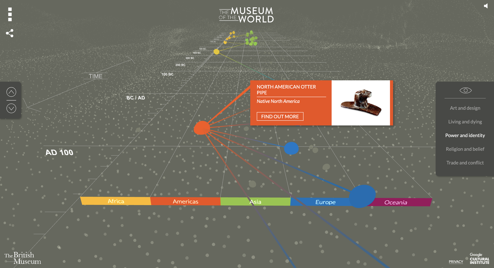

Experience The Night Watch, Contextualize An Exhibit:
How Digital Augmentation Is Transforming Museum Space
If you were tasked with setting up a museum exhibition of your own, how would you go about it? Would you hang paintings at even distances, mount sculptures onto cubic pedestals, attach small golden plaques to every exhibit – or do something else?
Most of us have the same idea of what a modern museum looks like – just google "museum gallery". These spatial conventions inform the ways in which collections are organized, even if the experience moves from in-person to online mode.
What happens when a museum abandons the notion of spatiality and organizes exhibits based on their meanings and contexts?

Non-spatial digital architecture allows to think about transitions between parts of the collection – just like transitions between two movie frames or a hyperlink and its content.
One of five types of montage in Soviet Montage Theory, "intellectual montage" was defined by Eisenstein as "the juxtaposition of images of concrete objects to construct abstract concepts and notions, preferably through a conflict of meanings."
To Eisenstein, the development of intellectual thought and intellectual montage are similar, since both participate in "comparative activity".

Example of Eisenstein's montage from "Battleship Potemkin"
To Benjamin, two phenomena are juxtaposed if they don't have "connecting matter or continuing thread or common topic" but still share some "inexplicit connection."
Benjamin calls networks of juxtapositions "constellations." Constellations can be constructed out of different objects (think museum paintings), events, and meanings.
The key question is: how do museums juxtapose and montage a collection to efficiently augment their narrative?
I argue that different levels of context- and time-based juxtapositions and montages allows a museum to capitalize on a combination of
intentional and unintentional augmentation.
Intentional vs. unintentional denotes the difference
between juxtapositions and montages that are curated and narrativized by a museum, and those that happen outside of its control.

< juxtapositions of the collection with the surroundings >
< constellations within one object >
< constellations of multiple objects >
< juxtapositions with the "outside world" >
In "Masterpieces Up Close," the Rijksmuseum displays the architecture of the Gallery of Honor while intentionally juxtaposing its elements to The Night Watch.

Parts of the space are allowed to appear and disappear on command, demonstrating that the lost "aura" of an in-person visit can be compensated for by uninterrupted access to high-quality visuals.
In “The Museum of the World,” the British Museum excludes space-related juxtapositions, not forming the context based on size, positioning, or surroundings of an object.
During the audio guide narration of The Night Watch, a cinematic montage makes unexpected parts of the painting interact, zooming in on certain elements, highlighting some, and drawing shapes around others. The constellations of small aspects of an artwork we find interesting are formed.
In "The Museum of the World," colorful visual constellations are drawn on-click to connect objects that had similar use and meaning at the time and place of their origin.
Both British Museum and Rijksmuseum use comparisons, contrasts, and common themes between elements of an experience to contextualize them.
This approach takes advantage of the digital serendipity of a web browser and a user’s ability to navigate away, juxtaposing an exhibition’s internal narrative with a user’s agenda, personal space, and interests.
"Masterpieces Up Close" points to external media such as related history, news, pop-culture, and creations the painting has inspired, encouraging unintentional augmentation.
The entire navigation of "The Museum of the World" is built in such a way that the user has to "stumble" upon an object (rather than intentionally find it) and augment it with the limited available context.
"Masterpieces Up Close" and "The Museum of the World" provide valuable ideas about the democratization of museum spaces through changing relationship with the visitor. When we are in charge of our interactions with an artwork, we take on a more participatory stance, seek out aspects we have personal involvement with, and form conclusions based on the range of provided multimedia.
reinvent material for the digital tour format
contribute to the contextualization of the collections
embrace the uncertainty of augmentation
curate the narrative but leave enough space for crucial juxtapositions to happen on their own